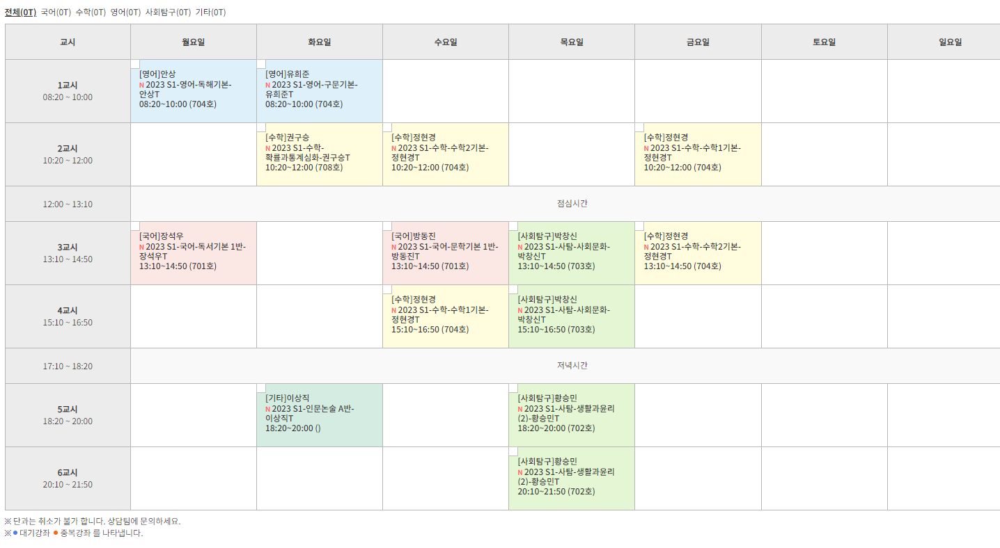
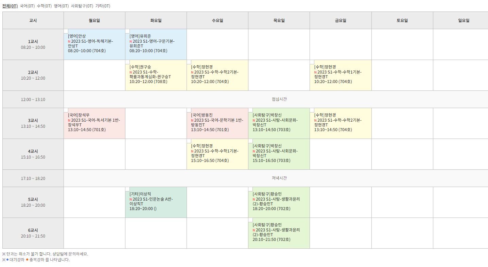

고등학교 졸업 후 나는 재수를 했다. 재수를 시작하게 된 것이 내 세 번째 변화구이다.
남들이 대학교에 진학하여 행복한 대학 생활을 보내고 있을 때, 나는 1년 동안 하루도 빠짐없이 재수학원 안에서 공부만 했다.
남들은 이 시간이 낭비라고 생각할 수 있겠지만 나는 재수를 하면서 내 삶에 대해 성찰하고 배울 수 있었다.
우선, 재수를 하며 생활 습관부터 바로잡았다. 공부를 잘 하기 위해서는 내 기본적인 생활습관부터 고쳐나가야 한다고 생각했다. 전에는 늘 해야할 일을 하느라 늦게까지 잠을 자지 않는 경우도
종종
있었고,
밤을 샐 때도 많았다. 그렇게 전날 시간을 쓰면, 다음날 늦잠을 자거나 반 쯤 혼이 빠진 채로 하루를 살곤 했다. 그런 점을 고치기 위해 나는 매일 밤 12시에 취침하고 아침 6시 반에
기상했다.
취침시간과 기상시간을 고정시켜 놓으니 깨어 있는 시간에 온전히 집중할 수 있었다.
잘못된 공부 습관도 고쳤다. 생각보다 수능을 준비할 수 있는 시간이 얼마 되지 않는다는 생각에, 평소 계획을 세우지 않는 습관을 버리고 촘촘하게 계획을 세우기 시작했다.
여러
시행착오를 거쳐 시간 낭비를 줄일 수 있는 방법을 연구했고,
어떻게 공부를 해야 효율적일지에 대해 고민했다. 그 결과, 나는 기억력이 좋지 않으니 넉넉한 기한을 잡아 반복 학습해야 함을 깨달았다. 그리고 암기과목의 경우에는 그림이나 표와 같은
시각적인
자료를 활용해서 그 시각적 자료를 사진 찍듯이 암기하는 것이
잘 맞는다는 것을 깨달았다. 이렇게 재수를 하면서 알게된 나의 특징과 나에게 맞는 공부 방법을 현재까지도 적용하고 있다는 점에서 내 인생의 세 번째 변화구라고 할 수 있다.
그렇게 수능이 끝나고, 진로 고민을 하던 중 인문/상경 학과보다는 이공계 학과로 진학하는 것이 나을 수도 있겠다는 생각이 들었다. 국어보다는 수학을 좋아했기도 하고,
중/고등학교
때 특정 직업이나 학과를 희망하지도 않았기 때문에
이공계로 진학을 해도 큰 무리가 없을 것이라고 생각했다. 그래서 덕성여자대학교 과학기술대학에 진학하여 현재 디지털소프트웨어공학부에 오게 되었다.